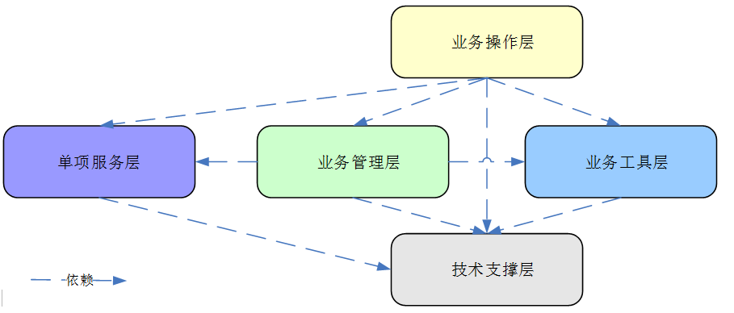

序号

模块名称
说 明
1
业务操作层
在业务操作层中的功能用于直接面向客户的业务操作与呈现，可以简单地认为其相当于系统的面门，用作客户的业务门面与操作入口。其中包括网上首页（各个功能模块的综合展现），按目的地、主题展示线路产品，还包括了对于平台背景的介绍主题，账户体系以及，客户进行私人定制的入口，这块需要客户填写自己的需求。
2
业务管理层
在业务管理层中的功能用于对业务操作层的支撑与管控，可以简单地认为其相当于中后台，用于中、基层管理人员对业务运作的监控与管控。本层以业务生命周期过程中的业务实体为基本组织单位，其承载着各业务环节的管理、配置、监控、以及对应业务实体的基本功能，并为业务操作层提供具体功能服务；
这里主要有，客户填写的需求管理，平台线路的发布及上下架管理，客户订单的管理，系统管理，平台数据统计，财务数据的管理。
3
业务工具层
在业务工具层中的功能，用于为业务操作与业务管理的正常运作提供必要的支持，业务工具是可以与业务操作、管理相分离的；
这里主要的平台的电核过程及客服支持。
4
单项服务层

这里的单项服务层，也可以认为是第三方供应商的管理，为平台线路制定，提供支撑，本层独立出来，保持其与它层次间的独立性，有利用增强产品的适应能力。

5

技术支撑层
技术支撑层，用于为系统提供基础开发平台与运行容器，是所有业务功能落地的基石。其中包含流程引擎、规则引擎、报表引擎与数据访问工具等等。
系统逻辑架构

系统本质上是一个业务操作系统，业务操作层自然便成为了整个系统的主要门户，是所有业务的入口。业务操作层依赖于单项服务，业务管理及业务工具层的正常运转，业务管理层为了能更好的对业务进行管控，也需要单项服务层，业务工具层的积极配合，所有层均在技术支持层的有力配合下运行；
功能层次关系